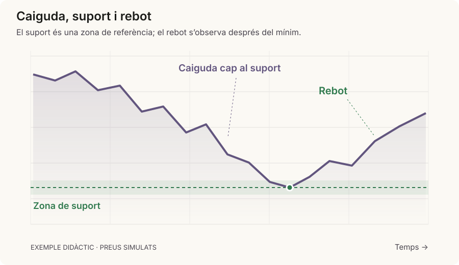
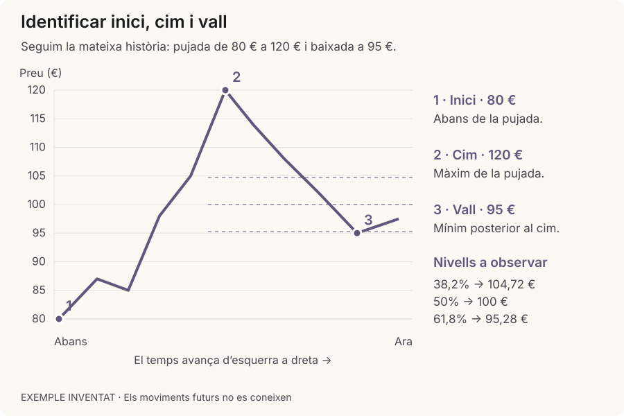
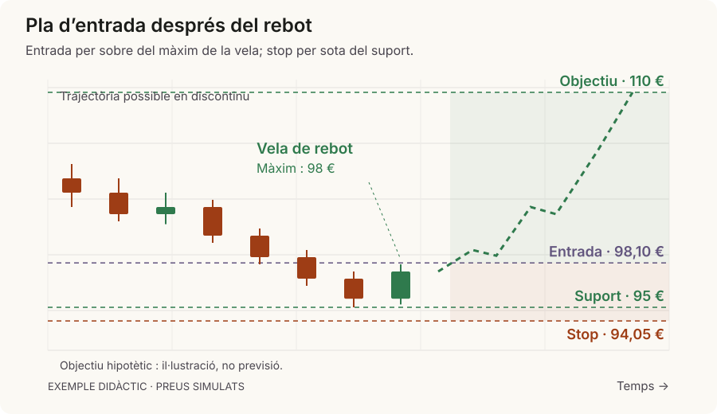

Aquest tutorial explica només la primera part de la Calculadora de Swing Trading — la pestanya "1 · Quan entrar", que inclou els passos 1, 2 i 3. Aquesta part et respon a una única pregunta: si decidís comprar aquesta empresa, a quin preu hauria de fer-ho, i amb quin pla de sortida? (La segona pestanya, "Quant comprar", és un tutorial a part.)
La idea de fons, abans de tocar cap camp
Imagina el preu d'una empresa com una muntanya russa:

El suport és una zona on la caiguda pot frenar; cal observar si el preu rebota.
No vols comprar quan el preu encara està baixant (no saps fins on arribarà), ni quan ja ha pujat molt (és car i et quedes sense marge). Vols comprar just quan toca fons i torna a girar cap amunt.
Els passos 1, 2 i 3 serveixen, per aquest ordre, per:
Comprovar que l'empresa està en una tendència de fons positiva (val la pena mirar-la).
Trobar on és probable que el preu es giri (el "suport").
Decidir a quin preu exacte compraràs, i a quin preu vendràs si l'operació va malament o si va bé.
Pas 1 · Actiu i tendència
Què has d'omplir
Quatre preus, tots consultats al gràfic de l'empresa (Yahoo Finance, el teu bròker, etc.), referits a avui:
Camp
Què és
Preu actual
El preu de cotització d'avui mateix.
M20
La mitjana dels últims 20 dies de cotització. Reacciona ràpid als canvis (curt termini).
M50
La mitjana dels últims 50 dies. Una mica més lenta (mitjà termini).
M200
La mitjana dels últims 200 dies (uns 9-10 mesos). Molt lenta: marca la tendència de fons.
Per què mitjanes i no només el preu? Perquè el preu sol dia a dia "sorolla" amunt i avall, i una mitjana suavitza aquest soroll perquè es vegi més clar cap a on va realment el valor.
On les trobes: a Yahoo Finance, al gràfic, pots afegir indicadors "MA(20)", "MA(50)", "MA(200)" — surten pintats directament sobre el gràfic, i si passes el cursor per sobre d'avui et donen el número exacte.
Què fa l'eina amb aquestes dades
Un cop les omples, et dona un petit diagnòstic automàtic (semàfor):
✓ Preu per sobre de la M200 → tendència de fons alcista (bon senyal).
✓ M50 per sobre de la M200 → la tendència és sana, no només un rebot puntual.
Un tercer avís et diu si el preu ja ha "corregit" (baixat una mica) o encara no.
Exemple teòric: una empresa cotitza avui a 100 €. M20=98€, M50=92€, M200=80€. → Preu (100) > M200 (80) ✓ i M50 (92) > M200 (80) ✓ → tendència de fons alcista i sana. Val la pena seguir mirant-la.
Exemple pràctic (sessió real): Preu actual = 536,65 €, M20 = 463 €, M50 = 487 €, M200 = 426 €. → 536,65 > 426 ✓ i 487 > 426 ✓: tendència alcista i sana. Detall curiós: la M20 (463) és inferior a la M50 (487) — fa poc hi va haver una caiguda forta i la mitjana curta encara no s'ha recuperat del tot, típic d'un rebot que just comença.
Pas 2 · Cim, vall i suports
Què has d'omplir

Exemple teòric del pas 2: inici, cim, vall actual i tres nivells possibles de suport.
Camp
Què és
Com el trobes
Inici de la pujada
El mínim des d'on va arrencar la pujada que ara estàs mirant (normalment 1-4 mesos abans del cim).
El punt més baix al gràfic, just abans que el preu comencés a pujar amb força.
Cim de la pujada
El màxim que ha arribat a tocar en aquesta pujada.
El pic més alt dels últims ~90 dies.
Vall actual
El mínim que ha tocat el preu durant la correcció posterior al cim, fins avui.
Si hi ha diverses valls després del cim, agafa la més baixa de totes.
Avís: de vegades la correcció és tan forta que la "vall actual" baixa fins i tot per sota de l'"inici de la pujada" — no és un error, només vol dir que la correcció ha estat profunda i cal anar amb més compte.
Què calcula l'eina
Correcció (%): quant ha baixat el preu des del cim fins a la vall → (Cim − Vall) ÷ Cim × 100.
Taula de suports possibles: 6 nivells de preu on el mercat sol girar-se — Fibonacci 38,2% / 50% / 61,8% (nivells matemàtics entre l'inici i el cim) i les mateixes M20/M50/M200 del pas 1.
Com triar el suport (el pas important)
Descarta els que ja s'han trencat: si la taula diu "(preu per sota)" al costat d'un nivell, el preu ja l'ha travessat — ja no serveix.
Dels que queden, comprova al gràfic real si el preu ha tocat i rebotat a prop d'algun recentment. Aquell és el més fiable.
Si cap coincideix exactament, prioritza el nivell vàlid més proper al preu actual (stop més ajustat) o un de més lluny si vols més marge.
Clica "Usar com a suport" a la fila triada — omple el camp "Suport triat" automàticament.
Exemple teòric: Inici = 80€, Cim = 120€. Rang = 40€.
Fib 38,2% = 120−0,382×40 = 104,7€ · Fib 50% = 100€ · Fib 61,8% = 120−0,618×40 = 95,3€
Si avui el preu és 97€ i ja ha baixat per sota dels 104,7 i els 100, el primer nivell que encara no ha trencat és 95,3€ → probablement el millor candidat.
Exemple pràctic: Inici = 453€, Cim = 629,42€, Vall actual = 414€ → Correcció = (629,42−414)÷629,42 = 34,2% (bastant profunda). Si el preu ha tocat els 414€ i ha tornat a pujar des d'allà (confirmat al gràfic), 414€ és el suport triat — és un fet real, no una teoria.
Pas 3 · Preus d'entrada, stop i objectiu
Aquesta és la part on decideixes els tres preus concrets de l'operació.

Exemple teòric del pas 3. La línia discontínua il·lustra una evolució possible fins a l’objectiu.
Què has d'omplir primer
Camp
Què és
Màxim de la vela de rebot
El preu més alt del dia concret en què vas veure que el preu començava a rebotar des del suport. Aquesta dada l'has de mirar tu al gràfic.
Marge sobre el màxim (%)
Quant per sobre d'aquest màxim vols esperar per confirmar el trencament (per defecte 0,1%).
Marge sota el suport (%)
Quant per sota del suport posaràs l'stop, per no sortir per una petita oscil·lació (per defecte 1%).
Ràtio B/R mínima acceptable
Quant vols guanyar com a mínim per cada € que arrisques (per defecte 2, el doble del que arrisques).
Els tres preus finals
Un cop tens el màxim de la vela de rebot, apareixen botons de color sota els camps "Preu d'entrada", "Stop Loss" i "Objectiu" amb un valor ja calculat:
Entrada suggerida = Màxim de la vela × (1 + marge d'entrada)
Stop suggerit = Suport × (1 − marge de stop)
Objectiu suggerit = Cim anterior (o una mica més amunt)
El resultat clau
Amb els tres preus, l'eina calcula la Ràtio Benefici/Risc: quant pots guanyar per cada unitat que arrisques. Si surt per sota de la mínima fixada, l'eina avisa en vermell que l'operació no compensa el risc.
Exemple teòric: Suport = 95€. Vela de rebot = 98€.
Entrada ≈ 98,10€ · Stop ≈ 94,05€ · Risc/acció ≈ 4,05€
Objectiu 110€ → Benefici/acció = 11,90€ → Ràtio B/R ≈ 2,9 : 1 ✓ (per sobre del mínim 2:1)
Exemple pràctic: Suport = 414€. Màxim del dia del rebot = 420€.
Entrada ≈ 420,42€ · Stop ≈ 409,86€ · Risc/acció ≈ 10,56€
Objectiu = cim anterior (629,42€) → Benefici/acció ≈ 209€ → Ràtio B/R ≈ 19,8 : 1 (excepcionalment alta, típic quan el suport està molt lluny del cim anterior)
Glossari ràpid
Terme
En una frase
Tendència
Direcció general del preu (amunt, avall, o lateral).
Mitjana mòbil (M20/M50/M200)
Mitjana dels últims N dies; suavitza el "soroll" del preu.
Suport
Nivell de preu on el mercat sol aturar una caiguda.
Correcció
Baixada temporal dins d'una pujada més llarga.
Fibonacci
Nivells matemàtics que molts inversors vigilen com a possibles suports.
Vela de rebot
La sessió (dia) on es confirma visualment que el preu torna a pujar.
Stop Loss
Preu de venda d'emergència si l'operació va malament.
Take Profit / Objectiu
Preu de venda de benefici si l'operació va bé.
Ràtio Benefici/Risc (B/R)
Quant guanyes per cada unitat que arrisques.
Errors típics a evitar
Inici de la pujada més alt que el Cim: revisa que realment hagis agafat el mínim abans de la pujada.
Triar un suport ja "trencat" (marcat amb "preu per sota"): el preu ja l'ha superat, no té sentit.
Oblidar actualitzar el Pas 1 quan canvies d'empresa o el preu ha canviat: si no ho fas, tota la taula de suports sortirà malament.
Confondre "Suport triat" amb "Preu d'entrada": el suport és la referència, no el preu al qual compres.
Aquest document i la calculadora són material formatiu general, no assessorament financer. Cap estratègia garanteix guanys.